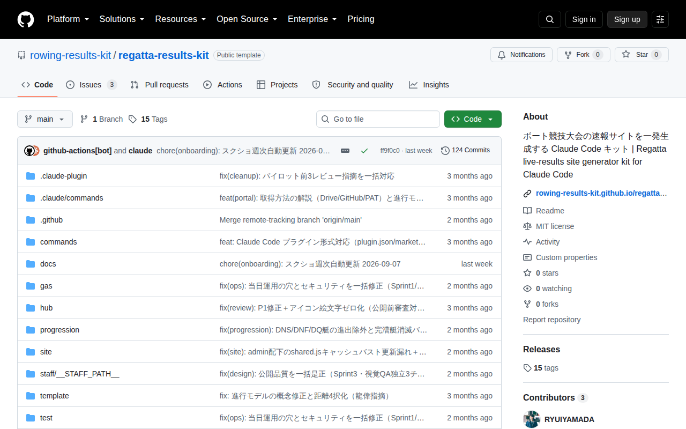
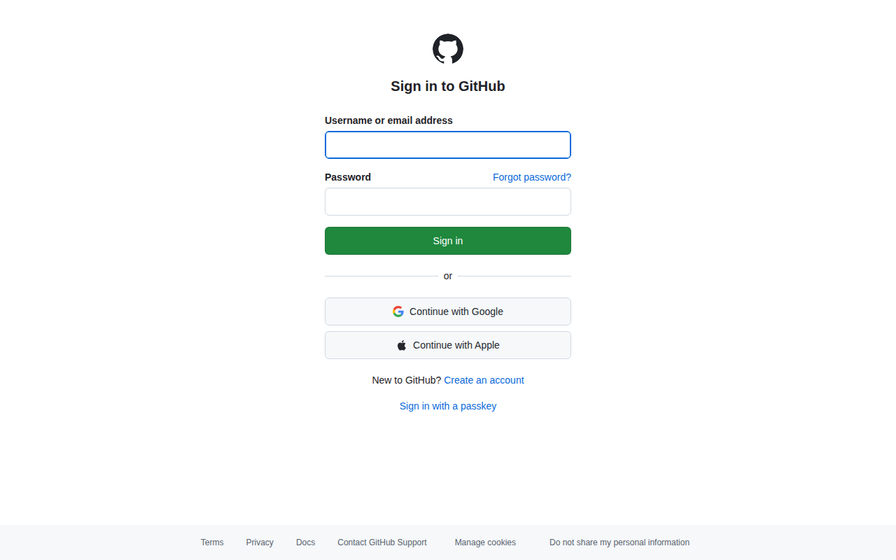

テンプレートリポジトリをコピーする
3〜5分操作手順
- github.com/rowing-results-kit/regatta-results-kit を開く
- 右上の 「Use this template」（緑ボタン）→ 「Create a new repository」をクリック
- Owner（所有者）を自団体のアカウントに変更する
-
Repository name（リポジトリ名）を入力する（例：
association-regatta-2027） - 公開範囲は 「Private」（非公開）を選ぶ
- 「Create repository」をクリック
先に GitHub にログインしてから「Use this template」を押してください。未ログインのままボタンを押すとログイン画面に飛ばされます。
リポジトリとは：ファイルをまとめて管理するGitHubのフォルダのことです。テンプレートをコピーすることで、速報サイトの雛形が自分のアカウントに作られます。
詰まったとき
「Use this template」ボタンが見当たらない
原因：配布者からの招待メールが未承諾の可能性があります。メールボックスを確認して招待を承諾してから再度アクセスしてください。
Owner の選択肢に自分のアカウントが出ない
原因：ブラウザで別のGitHubアカウントでログインしている可能性があります。右上のアバターをクリックしてアカウントを確認してください。
実際の画面（自動更新）

確認日: 2026-06-13 — 毎週月曜自動更新
画面右上の 「Use this template」（緑ボタン）→ 「Create a new repository」 をクリック。クリックで拡大表示できます。
GitHub ログイン画面（未ログイン時）

確認日: 2026-06-13 — 毎週月曜自動更新
先にここでログインしてから「Use this template」を押してください。クリックで拡大。